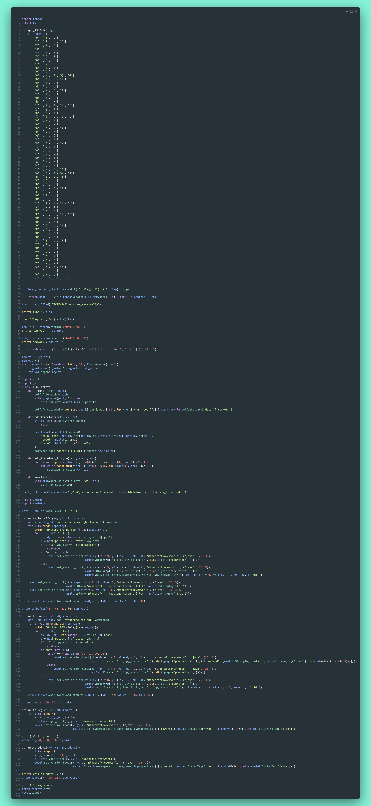
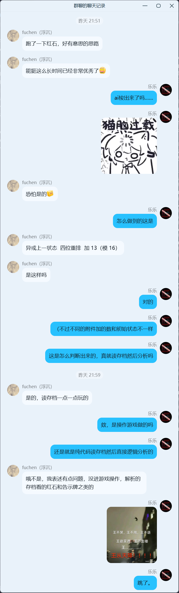

选手视角
拿到存档后，先用顺手的启动器下载26.3的我的世界，然后将存档拷贝到存档文件夹，接下来启动游戏，打开存档，根据告示牌提示，拉下拉杆，环游一周
接下分析整个地图上的红石电路

简单观察，可以把电路分为大致5个区域和中间的这个比较混乱的区域，下面一一分析
首先是A部分，这是一个键盘，虽然排版是矩阵键盘的样子，但实际上这是一个线性键盘，当按下按钮时，红石灯背面的红石火把灭掉，对应的导线灭掉，最后靠近线末端的红石火把亮起，点亮下方的线路，传导到右侧激活投掷器，使得投掷器后比较器输出红石信号，由此可以得到按键的编码为标准的十六进制，高位在图片下方，另外线路尽头另有一条路，代表按钮按下，被传导到C部分，同时输出数据也被传到C部分，由此可以推测C部分用途为存储输入
.png)
B部分是一个输出显示，以及一个检查按钮，可以看到这里逻辑比较简单，右侧连线5条自上而下功能为：传出检查信号、使显示屏输出busy、清除显示屏busy、显示wrong、显示right，同时内部也有一些连线，使得检查按钮按下时自动设置busy、答案信号到达时自动清除busy
.png)
下面观察C部分，根据推测，这是一个存储单元，可以看到这个部分由许多个重复单元组成，先观察输入输出，发现4bit数据输入1个、4bit数据输出1个、控制输入2个、控制输出3个；结合输入连线，判断高位在图像右侧；左侧的控制输入与A部分相连，推测为写入控制线；左侧的输出控制线与A部分的重置电路连接，说明该信号可能代表写入完成；由于已有写入控制，右侧的控制输入很可能就是读取控制，而输出有两个，其中一个仅与一个单元相连，可能是读取完毕指示，另一个就是读取完成指示
.png)
现在观察与C部分相近的D部分，发现D部分也由若干单元组成，其中包含开关情况不同的拉杆，很可能是我们的目标存储位置，这个区域有4bit数据输出1个，控制输入1个，控制输出1个，结合前面的设计，这个输入应当是读取控制，输出是读取完毕指示
.png)
接下来分析E部分，这个部分很明显是运算部分，首先将来自C部分的输入数据与来自F部分某处的数据进行异或，结合连线判断高位在图像上方，接下来将输出的位打乱，最后的一个部分是加法器，加法器的另一个输入是各条线路最后一个进位加法器上附着的拉杆，最后将结果输出，通过活塞传回F区域
.png)
有了其他部分的分析，接下来F部分就很好分析了
.png)
从检查答案逻辑入手，这个信号激活绿色区域，使得E区输出写入到下面的中继器并锁定，由此这应该是一个寄存器；同时激活上方活塞，将橙色区域的结果以脉冲形式输出，橙色区域逻辑是将E区输出与D区输出异或后取或，故上方输出为wrong，下方输出为right，接下来wrong直接传至B区回显，right经过由C区读取完毕之时的分路（亮蓝色区域），传至B区输出right或通知C区、D区输出下一个数据，当输出结束时，两个区域的读取完成信号传至玫红色区域，分别激活两个投掷器，使得对应比较器输出红石信号，经过与逻辑后输出，输出型号首先清除两个投掷器锁存器，然后经由一段延时电路再度激活寄存器写入和判读输出逻辑（红色部分），由此形成闭合逻辑循环
至此，我们得到了判断逻辑伪码如下：
1 | target = [...] |
接下来就是解出flag了，可以手动读取target，也可以自动读取，下面给出自动读取的脚本
1 | import amulet |

出题人视角
解题只需要把电路逻辑看个大概就行了，然而出题人要考虑的就很多了，下面会以设计的方式逐个组件分析
首先，对于每个模块，我们除了定义数据的输入输出接口，我们还定义控制输入和动作完成后的控制输出，这样就可以使用脉冲信号启动元件，同时输出的脉冲可以用来激活下一个元件，由此串联成网络，并且数据输出稳定等不确定因素将由内部延时保证，这样就无需在其他模块中考虑数据的延时，实现各模块的真正解耦合
下面就用这种思路设计各个模块
首先是按键模块，按下按钮后，有一个控制输出在数据输出稳定后输出，由此对数据输出使用了投掷器组成的锁存器，由此在下一次按键前要清除，这个作为控制输入暴露
然后是显示模块，这个主要是单纯显示使用，逻辑也很简单，里面三个灯对应三个锁存器，其中right/wrong仅有单向激活，busy可以激活/清除，同时内部连线使得按钮按下自动设置busy，结果传来自动清除busy
接下来设计运算模块，这个模块没有设计控制逻辑，仅进行数据运算，逻辑控制由逻辑核心控制，只需要按照算法设计即可
较为复杂的是输入缓存区和只读存储器，首先考虑整体用途，输入缓冲区拥有存储和读取双重功能，故有输入/输出总线，输入/输出控制线，输入/输出完成控制线，另外为了提供循环结束的条件，从其中一个的末端引出了一个读取完毕控制线，接下来分为每一个单元来看，控制写入即控制中继器是否被锁定，控制输出即将输出到总线之前与控制信号进行逻辑与即可，关键在于如何控制何时被激活，这里引入一个使能输入和使能输出，当没有使能输入时，说明控制的不是当前单元，此时抑制控制信号传入，当有使能输入但没有使能输出的时候，就说明目前控制的就是当前单元，输出数据并接受切换控制信号，接收到切换信号后，向完成控制线发出脉冲，同时设置内部锁存器以抑制信号输出、向下一个单元输出使能信号，由于锁存器仅可触发一次，所以就无需抑制控制信号，下面是分解图示
输入控制：
.png)
.png)
输出控制：
.png)
.png)
.png)
接下来就是逻辑核心，这个是判断循环的主体，但这个核心的逻辑并不复杂。首先是判题按钮连接到判断入口，接下来同时完成判断逻辑脉冲输出和寄存器更新，因为此时来自输入缓冲区和只读存储器的数据已经稳定，并且寄存器更新后要一段时间才会传导到判断逻辑，所以可以立刻同时执行；接下来输出分为right/wrong两路，其中wrong可以提前退出循环，直接传至显示模块；right模块根据循环结束条件分为两路，一路传至显示模块，另一路则代表循环继续，通知输入缓冲区和只读存储器更新输出，由于控制I/O的思路，这里延时交由相关模块处理，完成后通知等待锁存器，等待锁存器完成等待后输出脉冲，后面的等待是宽容模块间连线和逻辑运算模块的延时使用的，确保进入下一判断逻辑时输出已经稳定在寄存器输入/判断输入处
至此，所有设计完毕，依照连线将各个模块连接起来即可
接下来就是flag的写入，这里使用了编程完成，但是由于代码仅负责修改方块，并不会进行方块更新和红色信号更新，所以要替换周围方块强制游戏对脏数据进行更新，另外由于初始使能也会被更新，所以可以看到启动器等待锁存器有一个已经触发了，所以在判题按钮后连接了清除使能部分，确保在循环启动时等待锁存器均处于等待状态

另外，如果你觉得逻辑运行太慢/太快，可以了解一下/tick指令，该指令可以修改游戏运行速度，如/tick rate 1000将使游戏以500倍速运行（若电脑性能允许），或者/tick sprint <时间>来快进，/tick freeze将冻结除玩家外的其他时间更新，配合/tick step 2可以用来逐步调试红石电路（2世界刻=1红石刻）
整体来说，本题的逻辑不难，计划难度为3/10，只要稍微懂一些红石知识即可，现学也是可以的，就像很多misc题一样，可能会考察到一些冷门软件/文件，需要我们现场学习研究，也是临场学习能力的一种考验了
本来是想说，看看能不能稍微防一下AI一把梭的，毕竟从存档里读取红石线路不是很直观，比较考察空间推理逻辑，这个能力在LLM发展初期是相当弱的，所以我想借此试试能不能增加Agent的解题难度，结果嘛……还是被梭出来了……
AI大人✋😭🤚
